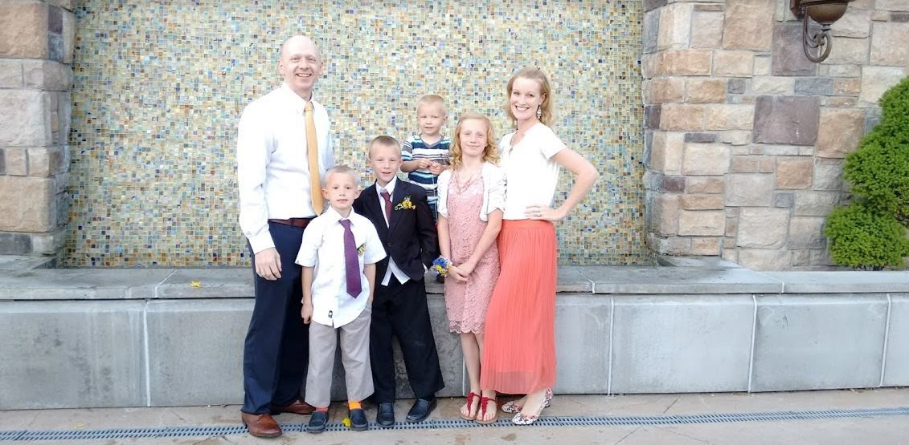

About Your Teacher
Welcome to my class. I look forward to teaching and getting to know each and every one of you this year. I also wanted to give you the opportunity to know a little more about me and my family.

I was born and raised in Logan, Utah. I have 4 brothers and no sisters. I went to Sky View High School and that is where I met the love of my life. After high school I served a mission in Hermosillo, Mexico. Upon my return I went to Utah State University. I finally graduated with a degree in Journalism and Communications and Minors in Spanish and Human Resources. Currently I am working on my Masters from Utah State University in Educational Technology and Learning Sciences.
Kristy was born in Missouri and rasied in California. At 15, her family moved to Utah; only 1 mile away from me. We met in high school but were only friends. We started dating after my mission and from there the rest is history. She has no siblings and gained 4 brother-in-laws when she married me. It was a shock but she has handled it extremely well. Kristy has a strong testimony of the gospel and is a great gospel teacher. Kristy currently does volunteer work for Pro-Life Utah. Hard yet satisfying work.
Eve, the oldest and only daughter, has one of the coolest birthdays. She was born on Halloween and it is a party every year. She will be attending Bennion Jr. High this year and is excited to be at the same school as her dad. Eve loves to run and hopes to make the track team this year. She wanted to last year but happened to break her leg at the end of the ski season. Fortunately it wasn't a bad break.
Jack is the second born. He is full of adventure and dares to do anything. This Summer he taught himself how to do a standing backflip. He loves to do tricks on the trampoline and has dabbled in parkour. He loves fishing and all things outdoors. Jack is also an avid reader. He typically will read any book we give him to read in 1 to 2 days. He loves to read.
Porter's birthday is only one day off of his dads. Porter loves to draw and read and play outdoors. A sport that he really likes is skiing. He is getting pretty good at it. He is always such a big help to his parents. When something needs to be done he is willing to help out. Porter is also the only child that doesn't have blue eyes. His are brown like his mother's.
Logan is the youngest. He is named after the city of Logan because that is the temple his parents were sealed in. Also because it is where his parents met. He is a bundle of joy that is always happy. He brings a smile to your face when you are around him. He loves to follow his siblings around and do all that do. He saw one of the Twilight movies where Jacob takes off his shirt and shows his muscles. That is now one of his favorite things to do, show us his muscles.
The Nielsen family has 3 pets. One dog, one cat, and one Parakeet. The dog, Aggie, is 2 years old and is our destructo dog. She loves to destroy anything she can. No more gardening for us. Our cat, Coco, is a Siamese mix who loves to eat. Her belly just about drags on the floor when she walks. Our bird, Blue, is a Parakeet who loves to chirp. A little too much if you ask me.